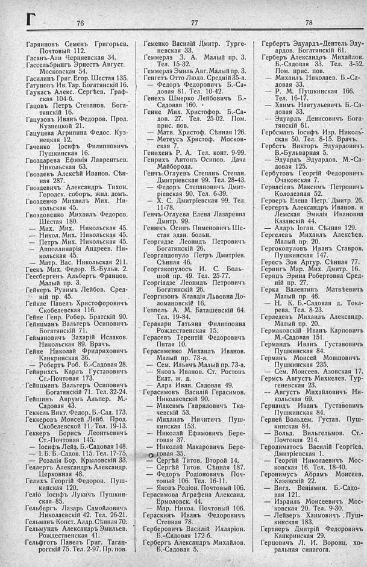

Лист источника 376
Скан

Распознанный текст
Г
76
Гаряиновъ Семенъ Григорьев.
Почтовый 112.
Гасанъ-Али Черняевская 34.
Гассельбрингъ Эрнестъ Август.
Московская 54.
Гасилинъ Григ. Егор. Шестая 135.
Гатуновъ Ив. Тар. Богатянскій 16.
Гаукасъ Алекс. Сергѣев. Граф-
ская 104-б.
Гацовъ Петръ Степанов. Бога-
тянскій 16.
Гацузовъ Иванъ Федоров. Прод.
Кузнецкой 21.
Гацуцева Агрипина Федос. Куз-
нецкая 12.
Гаченко Іосифъ Филипповичъ
Пушкинская 16.
Гвоздарева Ефимія Лаврентьев.
Никольская 63.
Гвоздевъ Алексѣй Иванов. Сѣн-
ная 287.
Гвоздевичъ Александръ Тихон.
Городск. соборъ, жил. домъ.
Гвозденко Михаилъ Мих. Ни-
кольская 45.
Гвоздовенко Михаилъ Федоров.
Шестая 180.
— Мих. Мих. Никольская 45.
— Никол. Мих. Никольская 45.
— Петръ Мих. Никольская 45.
— Апполлинарія Андреев. Ни-
кольская 45.
— Матр. Вас. Никольская 211.
Геекъ Мих. Федор. В.-Бульв. 2.
Геесбергенъ Альбертъ Францов.
Малый пр. 3.
Гейкеръ Рувимъ Лейбов. Сред-
ній пр. 45.
Гейкле Павелъ Христофоровичъ
Скобелевская 116.
Гейне Генр. Робер. Братскій 90.
Гейнцманъ Вальтеръ Осиповичъ
Богатянскій 71.
Геймановичъ Захарій Исааков.
Никольская 89. Врачъ.
Гейне Николай Фридриховичъ
Канкринская 36.
— Робертъ Роб. Б.-Садовая 28.
Гейнрихсъ Карлъ Густавовичъ
Ст.-Почтовая 173.
Гейнцманъ Вальтеръ Осиповичъ
Богатянскій 71. Тел. 32-24.
Гейшинъ Аврумъ Альпер. М.-
Садовая 43.
Геккель Викт. Федор. Б.-Сад. 173.
Геккеровъ Моисей Лейб. Прод.
Скобелевской 11. Тел. 19-13.
Геккеръ Борисъ Леонтьевичъ
Ст.-Почтовая 145.
— Іосифъ Лейз. Б.-Садовая 148.
— І. Б. Б.-Садов. 115. Тел. 17-75.
— Розалія Бор. Крыловскій 33.
Геллерть Александръ Александр.
Церковная 48.
Гелихъ Георгій Федоров. Пуш-
кинская 120.
Геліо Іосифъ Лукичъ Пушкин-
ская 85.
Гельбергъ Лазарь Самойловичъ
Николаевскій 42. Тел. 26-21.
Гельманъ Конст. Алдр. Сѣнная 70.
Гельмундъ Александръ Эмильев.
Рождественская 41.
Гельфготъ Павелъ Григ. Таган-
рогскій 75. Тел. 2-97. Пр. пов.
77
Геменко Василій Дмитр. Турге-
невская 33.
Геммерлэ З. А. Малый пр. 3.
Тел. 15-32.
Геммерлэ Эмиль Авг. Малый пр. 3.
Генгетъ Отто Людв. Средній 35-а.
— Федоръ Федоровичъ Б.-Са-
довая 81. Тел. 10-42.
Генехъ Шмерко Лейбовичъ Б.-
Садовая 160.
Генне Мих. Христофор. Б.-Са-
дов. 27. Тел. 25-02. Пом.
прис. пов.
— Матв. Христоф. Сѣнная 126.
— Метеусъ Христоф. Москов-
ская 7.
Генихенъ Р. А. Тел. конт. 9-99.
Генрихъ Антонъ Осипов. Дача
Майборода.
Генчъ-Оглуевъ Степанъ Степан.
Дмитріевская 99. Тел. 28-43.
— Федоръ Степановичъ Дмит-
ріевская 90. Тел. 6-39.
— Х. С. Дмитріевская 99. Тел.
11-78.
Генчъ-Оглуева Елена Лазаревна
Дмитр. 99.
Генюкъ Осипъ Пименовичъ Ше-
стая здан. больн.
Георгадзе Леонидъ Петровичъ
Богатянскій 26.
Георгандопуло Петръ Дмитріев.
Сѣнная 46.
Георгакопулосъ И. С. Боль-
шой пр. 49. Тел. 25-77.
Георгіадзе Леонидъ Петровичъ
Богатянскій 26.
Георгизонъ Клавдія Львовна До-
ломановскій 16.
Геппель А. М. Баташевскій 64.
Тел. 19-84.
Геракари Татьяна Филипповна
Рождественская 15.
Герасевъ Терентій Федоровичъ
Пятая 10.
Герасименко Михаилъ Иванов.
Малый пр. 73-а.
— Сем. Ильичъ Малый пр. 73-а.
— Яковъ Иванов. Ст. Ростовъ
Екат. ж. д.
— Алра Иван. Садовая 49.
Герасимовъ Василій Герасимов.
Николаевскій 90.
— Максимъ Гавриловичъ Тка-
чевскій 53.
— Михаилъ Никитичъ Пуш-
кинская 153.
— Николай Ефимовичъ Бере-
говая 37.
— Николай Макаровичъ Бере-
говая 35.
— Сергѣй Титов. Второй 14.
— Сергѣй Титов. Сѣнная 187.
— Федоръ Родіоновичъ Поч-
товый 106. Тел. 16-11.
— Яковъ Родіон. Почтовый 106.
Герасимова Аграфена Александ.
Ермоловск. 44.
— Мар. Никол. Почтовый 106.
Гераскинъ Иванъ Федоровичъ
Степная 78.
Герберовичъ Василій Илларіон.
Б.-Садовая 172-б.
Гербергъ Александръ Михайлов.
Б.-Садовая 5.
78
Гербертъ Эдуардъ-Дентель Эду-
ардов. Богатянскій 61.
Герберъ Александръ Михайлов.
Б.-Садовая 33. Тел. 3-52.
Пом. прис. пов.
— Михаилъ Николаев. Б.-Са-
довая 33.
— Р. М. Пушкинская 166.
Тел. 16-17.
— Хаимъ Навтульевичъ Б.-Са-
довая 33.
— Эдуардъ Денисовичъ Бога-
тянскій 61.
Гербсманъ Іосифъ Изр. Николь-
ская 50. Тел. 8-15. Врачъ.
Гербстъ Викторъ Эдуардовичъ
В.-Бульварная 5.
— Эдуардъ Эдуардов. М.-Са-
довая 125.
Гербутовъ Георгій Федоровичъ
Очаковская 7.
Гервасіевъ Максимъ Петровичъ
Колодезная 52.
Герверъ Елена Петр. Дмитр. 26.
Гергертъ Александръ Иванов. и
Лемская Эмилія Ивановна
Казанскій 44.
— Алдръ Іоган. Сѣнная 129.
Гергелевъ Михаилъ Алексѣев.
Малый пр. 20.
Гергокопуловъ Иванъ Ставров.
Пушкинская 147.
Гересъ Зоя Артур. Сѣнная 77.
Герингъ Мар. Мих. Дмитр. 16.
Герицъ Эрина Робертовна Сред-
ній пр. 27.
Герка Валентинъ Матвѣевичъ
Малый пр. 46.
— Н. К. Б.-Садовая д. Тока-
рева. Тел. 8-23.
Герледевъ Михаилъ Александр.
Малый пр. 20.
Гермаковскій Иванъ Карповичъ
М.-Садовая 151.
Германдъ Иванъ Густавовичъ
Пушкинская 84.
Германъ Моисей Мовшовичъ
Пушкинская 235.
— Сем. Моисеев. Азовская 17.
Гермсъ Августъ Микхелев. Тур-
геневская 23.
-- Августъ Михайловичъ Ни-
кольская 69.
Гернандъ Иванъ Густавовичъ
Пушкинская 84.
Герней Вольдем. Густав. Пуш-
кинская 84.
— Вольд. Вильгельмов. Ст.-
Почтовая 214.
Геродиматосъ Василій Георгіев.
Дмитріевская 1.
— Георгій Николаевичъ Мос-
ковская 16. Тел. 18-40.
Геронимусъ Абрамъ Моисеев.
Казанскій 22.
— Вигд. Веніамин. Б.-Садо-
вая 121.
— Израиль Моисеевичъ Мос-
ковская 20. Тел. 9-30.
— Лейзеръ Хаимовичъ Пуш-
кинская 183.
Гертнеръ Дмитрій Федоровичъ
Канкринская 29.
Герцовичъ Л. И. Воронц. хо-
ральная синагога.